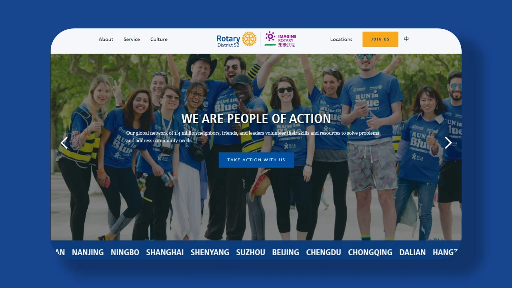
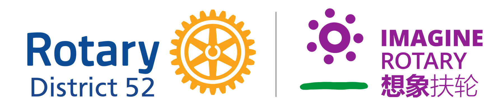
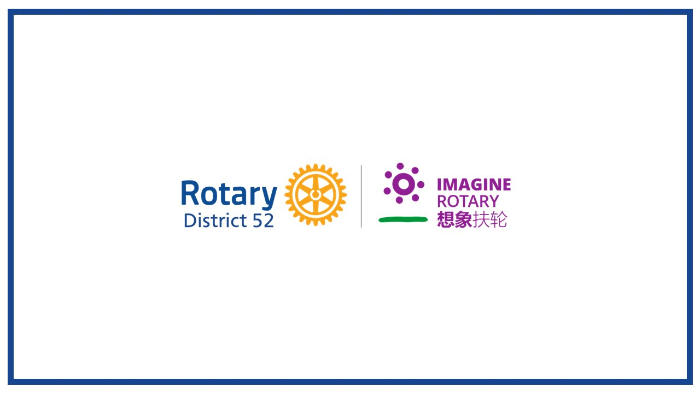
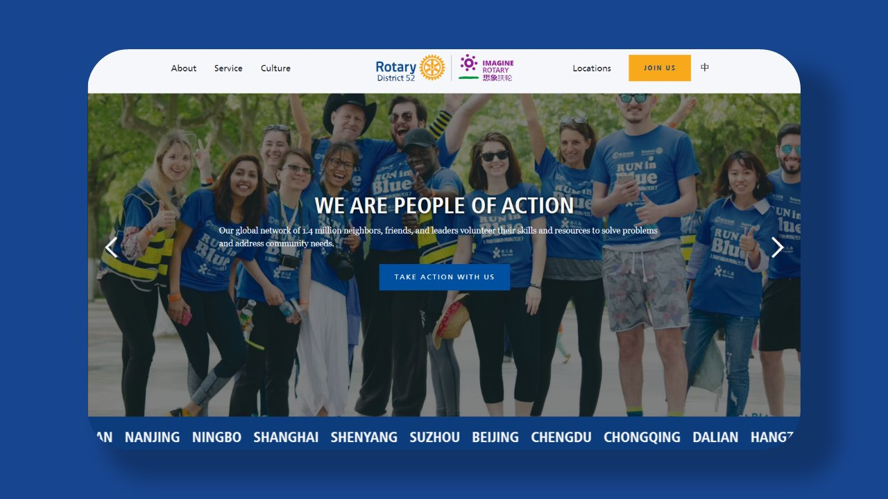
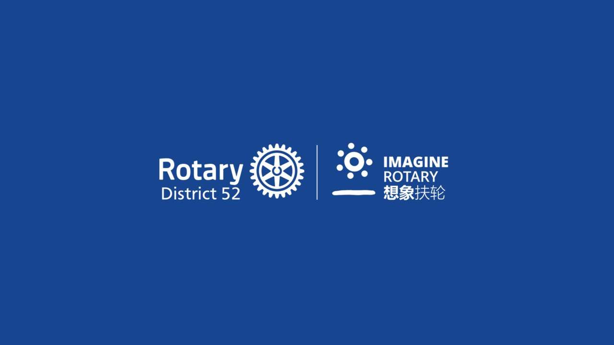
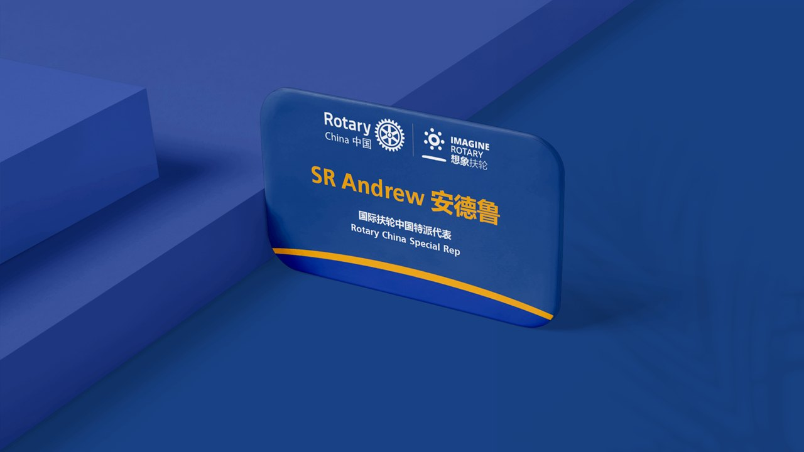
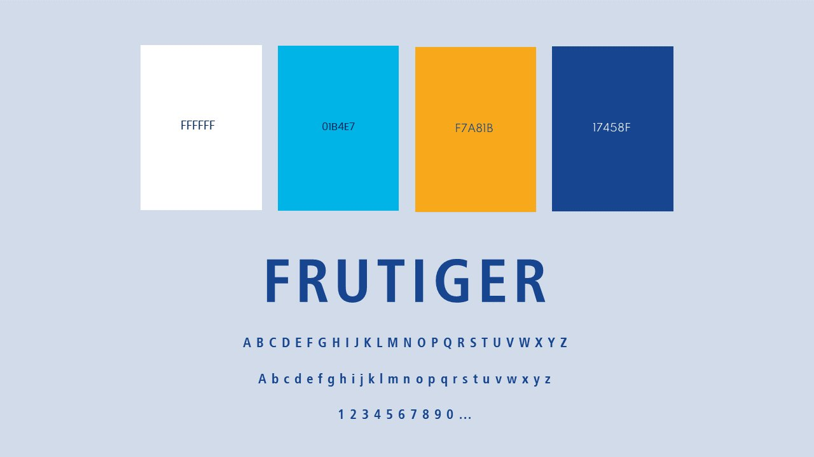
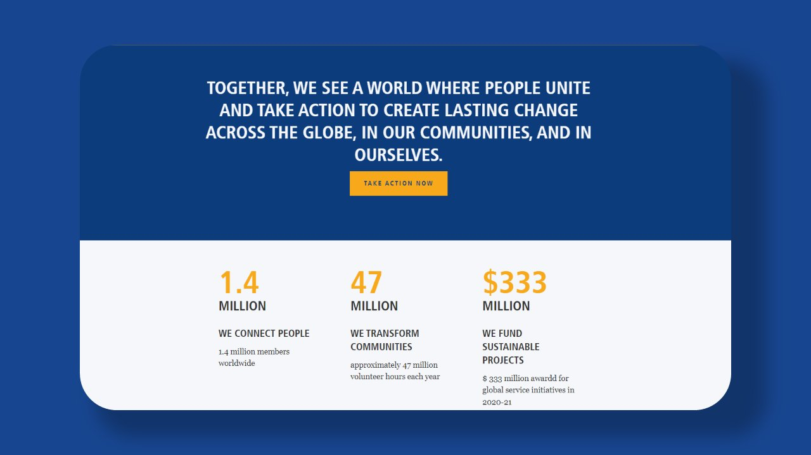
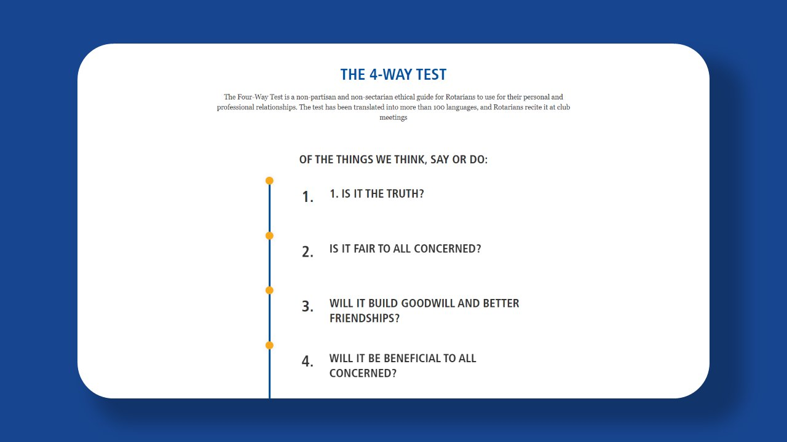
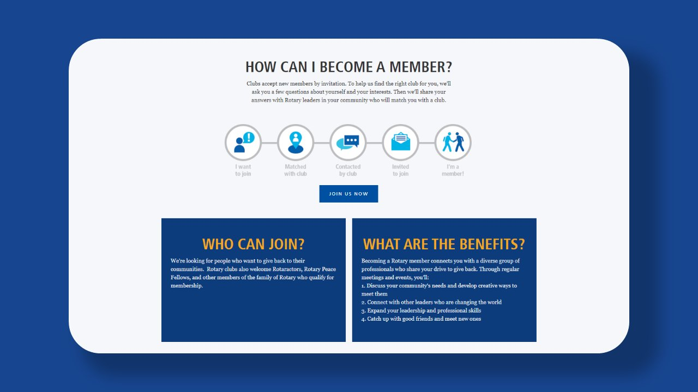

Non-profit · Brand Platform
Service
Above Self
Rotary China empowers communities through leadership and humanitarian projects.

Rotary China
Non-profit · Brand Platform
- Brand Strategy
- Visual Identity
- Website Development
- Brand Video
Brand Platform. Modern.
Goal
A modernized visual identity to align with Rotary's evolving mission.
Solution
A cohesive brand identity, website, and video reflecting Rotary China's commitment to service and global impact.
What we delivered.
Brand Strategy
Developed a strategy to align the visual identity with global impact.
Visual Identity
Created a modernized visual identity to inspire trust and convey leadership.
Website Development
Built a user-friendly website to connect with communities effectively.
Brand Video
Produced a video showcasing their commitment to community service.
The palette
- Blue#17458f · Primary
- Blue surface#4166a3 · Primary surface
- Yellow#f7a81b · Secondary
- Yellow shade#d89a2b · Secondary shade

The work








In their words
“My experience with Pulse Branding was nothing short of incredible. From start to finish, they moved the process along quickly and effortlessly. Their proprietary software helped me articulate my thoughts and achieve the quality and connection I wanted in my logo, branding, and web presence. I've worked with many branding and web design companies in the past, but none have impressed me like Pulse Branding. They are simply the best. Thank you, Pulse Branding, for making something that I am as proud of as my company!”
— Andrew Hill, District Representative
Where it landed
Revitalizing Rotary China's brand presence, enhancing community connections and expanding their reach.
Have a similar business problem?
Bring us the problem.
You do not need to know which service you need. Start with the problem, or run the free audit and let the evidence choose the next step.